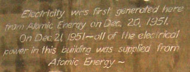

About Whatisnuclear.com
Who we are
We are a group of young nuclear engineers hoping to help the world learn some interesting and important information about nuclear power. We find ourselves explaining things like waste recycling and passive safety over and over to a diverse and rather receptive audience. We aim to enlighten the public about the capabilities of nuclear energy so that society may embrace it as a vast improvement in many aspects over current energy sources. Someday, we may be able to run the planet purely on solar power or on fusion, but until then, we consider nuclear fission to be the most environmentally sound power source with the capacity to displace fossil fuels. This website is non-profit. We have no funding and no ads.
Philosophy
In order for a technology to be convincingly superior to others, it must not only present compelling advantages, but also must concede to its weaknesses and demonstrate acceptable responses to its harshest criticism. Nuclear energy has drawbacks. We won’t try to cover these up, but rather will try to present them clearly and explain or propose solutions to the problems. Too many times have we read that this or that is the only thing that can save the planet. We will avoid this hysteria and strive to provide calm and true information and perspectives.
Affiliations
This page was originally started by nuclear engineering students at the University of Michigan, but we have since graduated and moved into various other institutions. All information and opinions on this site are our own perspectives, and do not represent the views of our employers. The site servers and DNS hosts are funded out of our contributor’s pockets and all writing is done for free on our own time.
Contacting us
You can reach us privately via the contact form or you can stir up some discussion publicly by posting in the forum. Feel free to do either or both! We’d love to hear from you. If you want, you can encrypt your message against this public key.
Nick Touran, Ph.D.
Articles, editing, web administration

Natallia Pinchuk
Articles
I'm Natallia. I was born in Belarus. I was a nuclear engineer working in industry and now I got my MBA and am working in consulting. I also have a BSE and MSE in nuclear engineering.
Brian Wagner
Articles
I'm Brian. I'm a nuclear engineer working in regulation. I have an MSE in nuclear engineering.
Others
Articles, consultation
- Dr. Robert Petroski, Ph.D., MIT
- Dr. Jesse Cheatham, Ph.D., Univ. of Michigan
- Dr. Brian Johnson, Ph.D., MIT
- Adam Hoffman, Univ. of Michigan
Inspiration
{kind=link}
During a nuclear history lecture, Professor Ron Fleming of the University of Michigan nuclear engineering department explained that we have succeeded in harnessing atomic weapons, but have failed in harnessing peaceful atomic power. It was Dec 20th, 1951 when atomic power was first converted to electricity at the EBR-1 in Idaho. Today, only 20% of our energy is nuclear, and many good people are still designing and building coal power plants. With global climate change looming, the media is screaming out, "We need sustainable carbon-free power from some source," but no one will as much as mention the word: nuclear.
Professor Fleming went on to say that, if global warming pans out as it may, and millions of people suffer the consequences, he will blame nuclear engineers. They have had an effectively endless supply of atmospheric emission-free energy for decades and have not packaged it into a form that is acceptable to the mainstream public. His purpose was to drive us, the young nuclear engineers, to finally provide humanity with this superior form of energy.
The industry has taken good care of itself and now boasts an excellent safety and operations record. With everyone wondering what could possibly replace coal and oil, I find myself frustrated with the public shun of nuclear power. I came to the University of Michigan in 2002 with one career goal: to help with the energy problem. After a year, I discovered the nuclear engineering department and came to the conclusion that this power source has a lot of unknown (to the public) potential. The more I learned, the more I was impressed. But without the public on-board, no amount of potential will do humanity any good. Therefore, I consider it my duty to not only dedicate my career to the deployment of nuclear power over coal, but also to educate as many people as I can about nuclear technology.
This web site is a collaborative effort to expose the non-nuclear engineers to nuclear power. Anyone should be able to come here, learn the basics of electricity generation, read about common concerns and objections to nuclear power, and take in some of the developments in the industry that we think are very exciting.
- Nick Touran, 2007